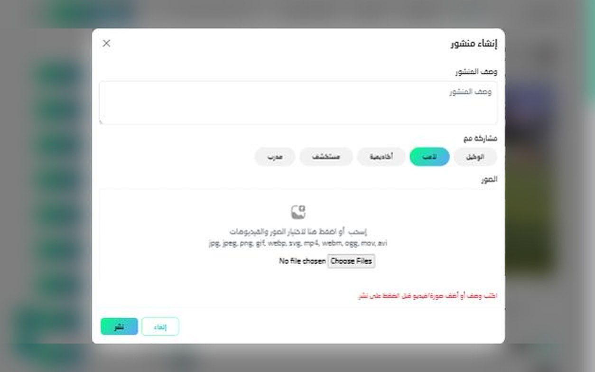

HAT-TRICK
One API behind a football social network where players, coaches, academies, agents and scouts each see a different product.
API واحد خلف شبكة اجتماعية لكرة القدم، يرى فيها كلٌّ من اللاعبين والمدربين والأكاديميات والوكلاء والكشّافين منتجًا مختلفًا.

01 — The problem01 — المشكلة
Football recruitment runs on contacts. A player with talent but no agent rarely reaches a scout, and academies have no single place to find and follow players. HAT-TRICK set out to be that place: a social network built around football careers.
الاستقطاب في كرة القدم يعتمد على المعارف. اللاعب الموهوب بلا وكيل نادرًا ما يصل إلى كشّاف، والأكاديميات لا تملك مكانًا واحدًا تجد فيه اللاعبين وتتابعهم. هدف HAT-TRICK أن يكون هذا المكان: شبكة اجتماعية مبنية حول مسيرة لاعب كرة القدم.
The hard part for the backend: five very different user types sharing one platform, each with their own profile data, permissions and actions, on both web and mobile.
التحدي في الـ Backend: خمسة أنواع مستخدمين مختلفة جدًا على منصة واحدة، لكلٍّ منها بيانات ملف شخصي وصلاحيات وإجراءات خاصة، على الويب والموبايل معًا.
02 — Architecture02 — البنية
A single Laravel API serves the website and the mobile apps. Authentication, roles and permissions live in the API, so the web and mobile clients follow exactly the same rules.
API واحد بـ Laravel يخدم الموقع وتطبيقات الموبايل. المصادقة والأدوار والصلاحيات كلها داخل الـ API، فيلتزم الويب والموبايل بالقواعد نفسها تمامًا.
03 — Key decisions03 — قرارات أساسية
- A user type, plus Spatie for permissions. Every account lives in one
userstable with a type: player, coach, academy, agent or scout. Spatie Laravel Permission handles roles and permissions, and the code reads the type to decide which profile fields, feed and actions each user gets. - Posts with a chosen audience. When someone posts, they choose which roles see it, so a player can speak to scouts and agents without posting to everyone.
- Media built in. Posts take images and video in the common formats (jpg, png, webp, mp4, mov and more), stored per post.
- نوع لكل مستخدم، وSpatie للصلاحيات. كل الحسابات في جدول
usersواحد ولكل حساب نوع: لاعب أو مدرب أو أكاديمية أو وكيل أو كشّاف. تتولى Spatie Laravel Permission الأدوار والصلاحيات، ويقرأ الكود نوع المستخدم ليحدد حقول ملفه وما يظهر له في التغذية وما يستطيع فعله. - منشورات بجمهور محدد. عند النشر يختار المستخدم الأدوار التي ترى المنشور، فيستطيع اللاعب مخاطبة الكشّافين والوكلاء دون النشر للجميع.
- الوسائط جزء من المنصة. تقبل المنشورات الصور والفيديو بالصيغ الشائعة (jpg وpng وwebp وmp4 وmov وغيرها)، وتُخزَّن لكل منشور على حدة.

04 — Result04 — النتيجة
Launched in 2025 and live on web and mobile, with all five account types running on the same API.
أُطلقت المنصة في 2025 وتعمل على الويب والموبايل، وأنواع الحسابات الخمسة كلها تعمل على الـ API نفسه.
05 — What I'm fixing next05 — ما أعمل على إصلاحه
Duplicate posts. In production, the same post sometimes shows up several times in the feed with identical text and time. That's a classic double submit: a second tap, or the mobile app retrying a slow request, and the API happily creates a second row.
The fix works on both sides:
- Client: disable the publish button the moment it's pressed.
- API: make
POST /postsidempotent. The app sends anIdempotency-Keyheader; the first response is cached against that key for a few minutes and returned for any repeat, so retries are safe. - Safety net: reject an identical post from the same user within a short window, for older app versions that don't send the key.
Small bug, but it's the kind that only appears with real users on real networks, and a good reminder that "create" endpoints should always be safe to call twice.
تكرار المنشورات. في بيئة الإنتاج يظهر المنشور نفسه أحيانًا عدة مرات في التغذية بالنص والوقت نفسيهما. هذا إرسال مزدوج تقليدي: ضغطة ثانية، أو تطبيق الموبايل يعيد إرسال طلب بطيء، فيُنشئ الـ API صفًا ثانيًا.
الحل على الجانبين:
- في التطبيق: تعطيل زر النشر لحظة الضغط عليه.
- في الـ API: جعل
POST /postsآمنًا للتكرار (idempotent). يرسل التطبيق ترويسةIdempotency-Key، وتُحفظ أول استجابة مرتبطة بهذا المفتاح لبضع دقائق وتُعاد لأي تكرار، فتصبح إعادة المحاولة آمنة. - شبكة أمان: رفض منشور مطابق من المستخدم نفسه خلال فترة قصيرة، لإصدارات التطبيق القديمة التي لا ترسل المفتاح.
خطأ صغير، لكنه من النوع الذي لا يظهر إلا مع مستخدمين حقيقيين وشبكات حقيقية، وتذكير بأن أي endpoint للإنشاء يجب أن يكون آمنًا إذا استُدعي مرتين.